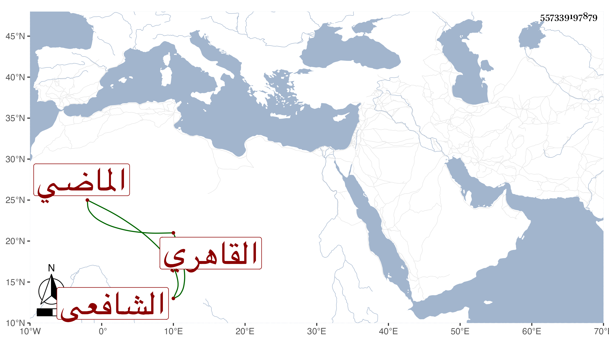

0902Sakhawi.DawLamic.ITO20230111-ara1.EIS1600.557339197879
Biography ID: 557339197879
995
يحيى بن علي بن محمد بن إقبرس الشرف أو الأمين بن العلاء القاهري الشافعي الماضي أبوه ويعرف كهو بابن اقبرس . ولد في أثناء صفر سنة تسع وعشرين وثمانمائة وحفظ العمدة والمنهاجين وعرض في سنة إحدى وأربعين على شيخنا والطبقة وأخذ في الفرائض عن الشهاب السارمساحي وفي الأصول والعربية وغيرهما عن ابن الهمام وتلميذه سيف الدين بل لازم التقي الحصني وسمع يسيرا على شيخنا وتميز قليلا وأظنه نظم ثم أعرض عن هذا كله واشتغل بالسفر وارتقى فيه إلى أن توالى عليه كسر المراكب فتضعضع مع حسن عشرته وتودده وأفضاله بحيث سمعت الثناء عليه من جماعة كالعز السنباطي وأنه لم ينتفع مما صار إليه من قبل أبيه بشيء أو نحو هذا وكذا وصفه البقاعي في أبيه بالفضل والدين . وأقام قبيل موته بعد ضعف حاله بالينبوع حتى مات في سنة تسع وثمانين وتكلم في تركته الأتابك ووجد له من كتب العلم ما يبلغ ثمنه فيما قيل الألف رحمه الله وعوضه الجنة وقد رأيته كتب على شرح المختصر للبهاء الأبشيهي :
| حليت إذ جليت أبكار الفكر | ذات البهاء على خليل بالدرر |
| سام على بسط البساطي شوطا | حاوى الجواهر جلى حلي المختصر |
